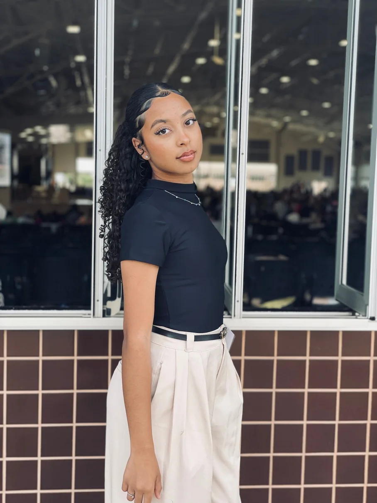

EC / VISUAL DIARY
Esperar também
é amar. PRÉVIA CONCEITUAL
é amar. PRÉVIA CONCEITUAL
01 / MATERNIDADEO início de tudo
Uma seleção de registros reais, entre os primeiros ensaios e os detalhes que chamaram meu olhar.
✳ Cada história começa com um olhar. Toque em um projeto para descobrir mais.
Alguns instantes pedem mais que uma foto. Pedem tempo, ritmo e movimento.
A pessoa antes da câmera. A sensibilidade por trás de cada escolha.

Sou Emanuelle Costa, criadora visual de Brasília. Minha história começou fotografando paisagens pelo celular, até descobrir, em um ensaio de gestante em família, o quanto uma imagem pode guardar.
Hoje exploro fotografia, vídeo, edição e criação visual. Gosto de juntar estética e autenticidade sem deixar de lado a essência de cada história.
Conheça meu jeito de criarCoisas simples.
Olhares que ficam.
Tem um projeto, uma ideia ou um momento especial para guardar? Eu adoraria ouvir você.
Me chama no WhatsApp